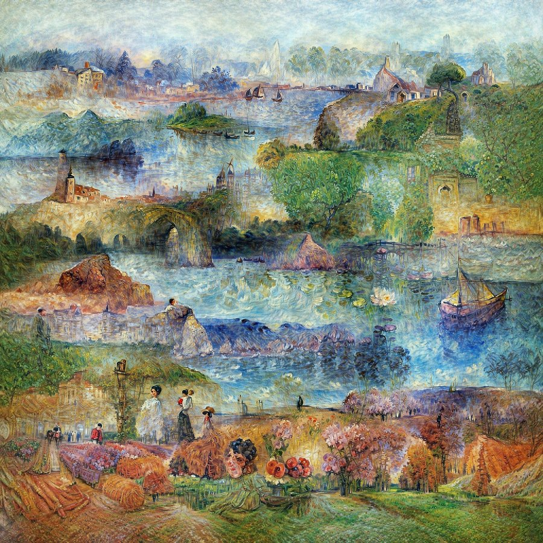
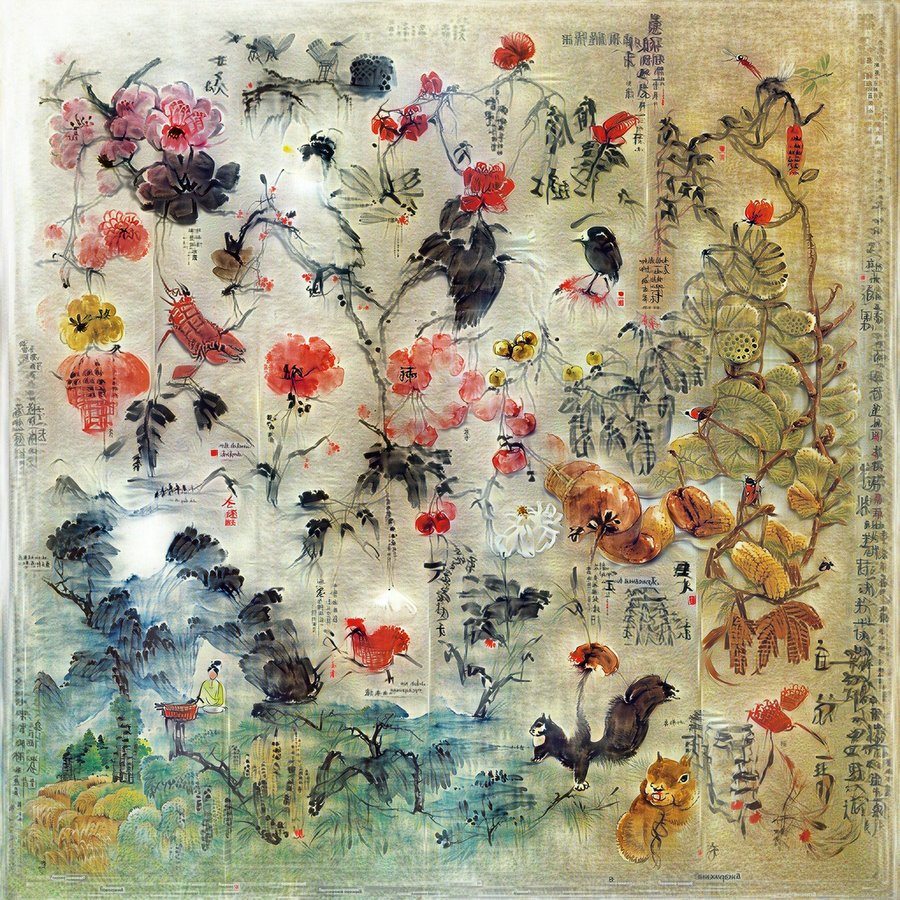

TL;DR
In this work, we distill large datasets down to just a few synthetic samples per class. We do this via What is drifting? In simplest terms, each distilled image is pulled towards every real image (weighted by a softmax kernel) while also being pushed away from every other synthetic image. Please see Generative Modeling via Drifting for more details. in the feature space of an arbitrary encoder. These distilled images reach state-of-the-art results in the traditional from-scratch classification task as well as a newly proposed set of feature-space tasks. We also show preliminary results generalizing this method to video and audio modalities. Please see our paper for more details.
Distilled Images Approximate the Real Distribution
The drifting loss ensures that the distilled images, together with their augmentations, approximately cover the real distribution. Hover over a point to see the real image (circle) or augmented distilled image (triangle).
Distilled Augmentations of distilled Real
ImageNet-1k Distilled via Drifting
These 10 images per class were initialized from noise and then distilled via drifting in DINOv3's feature space.
View all of our distilled datasets →
Image Pyramids
We parameterize our distilled images as a Laplacian pyramid of different resolutions, from 1×1 to 256×256. The pyramid acts as an implicit regularizer on the frequency magnitudes, leading to images that adopt a natural power spectrum. The widget below shows the contribution of each layer to the final image.
More jellyfish:
Distillation Process
Distilled images are initialized with noise and then optimized via Adam w.r.t. the drifting loss. The jittering in the early part comes from adding a new pyramid layer every 200 steps. 10,000
An Image Worth a Thousand Paintings
In our ECCV 2026 Art Gallery piece, we distill each artist's entire body of work into a single large canvas.
Visit the gallery →

Citation
@inproceedings{cazenavette2026drifting,
title={Dataset Distillation via Drifting},
author={Cazenavette, George and Quan, Angelina and Daras, Giannis and Torralba, Antonio and Sitzmann, Vincent},
booktitle={Advances in Neural Information Processing Systems},
year={2026}
}